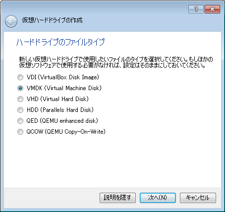
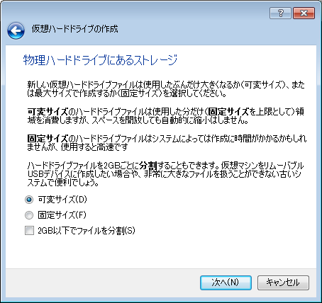
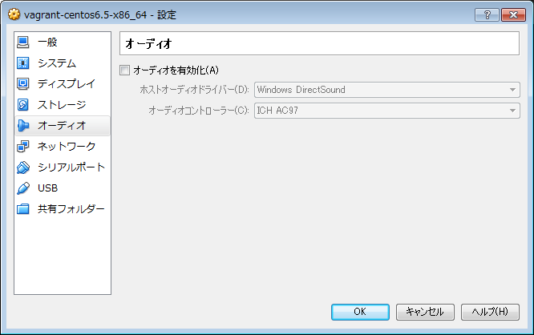
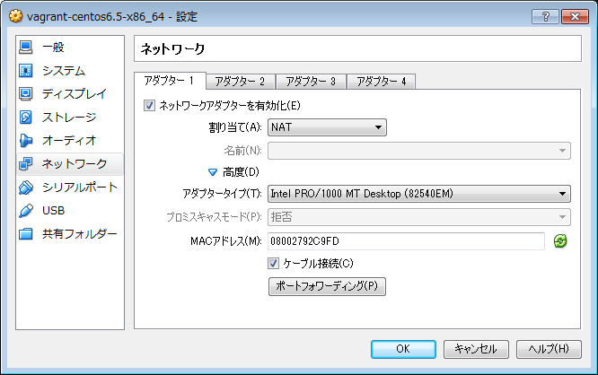
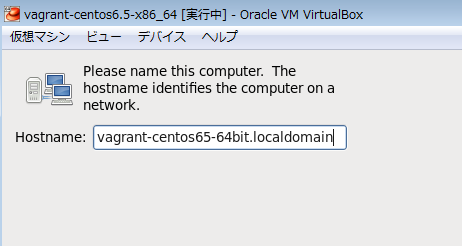
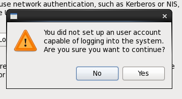
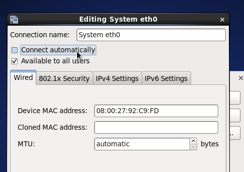

カテゴリ: DevOps Linux Vagrant VirtualBox
技術/運用管理/Vagrant ではUbuntuでBoxを作った時のメモを載せてて、「CentOSならこうなる」的なのを簡単にメモで補足しただけでした。
今回はガッツリとCentOS 6.5で、"Minimal Desktop"インストールで作ったVirtualBoxのVMをBoxにしてみましたので、作例メモを残しておきます。
環境：
Windows7 Pro 64bit 日本語版 VirtualBox 4.3.12 Vagrant 1.6.3 CentOS 6.5 DVD iso イメージ
全体的には、技術/運用管理/Vagrant の参考資料欄にのせた記事を参考にさせてもらいました。
1. VirtualBox上でCentOS 6.5を"Minimal Desktop"タイプでインストールする。
この辺は前回と同じです。今回はVMの名前を以下にしました。
vagrant-centos6.5-x86_64
ディスクファイルタイプは"VMDK"にする必要があります：

サイズは最大8GBで可変にしました：

オーディオとUSBをOFFにしました：

ネットワークアダプタの1つめは、NATタイプにする必要があります：

ホスト名は、以下のようにしてみました。

※"vagrant-OS名"のような命名にしてる例を幾つか見かけたので、それに従いました。
例 : https://github.com/fespinoza/checklist_and_guides/wiki/Creating-a-vagrant-base-box-for-ubuntu-12.04-32bit-server
あとはrootユーザのパスワードを"vagrant"にしておきます。
最後にインストールタイプで"Minimal Desktop"タイプでインストールします。
2. インストール後の調整
インストール後に、SELinuxやiptablesの調整、vagrantユーザの追加、sudoの設定、VirtualBox Guest Additionのインストールなどを行います。
今回は"Minimal Desktop"でインストールしたためか、再起動後に、すぐにGUIでユーザ設定などを行う初期設定画面が表示されました。
ここでは、後でコマンドラインから確実に追加するため、何も入力せずに（上の画面では切れてしまってて分かりませんが）Forwardボタンをクリックします。
「本当にいいの？」と訊かれてきますが、「Yes」で進めてしまいます。

この後はrootユーザでログインします。
iptablesを無効化しておきます：
# service iptables stop # chkconfig iptables off # service ip6tables stop # chkconfig ip6tables off
selinuxも無効化します。前回記事の補足説明や、参考資料を参照してください。
eth0が起動時無効になってましたので、GUIから起動時有効に変更します。

MACアドレスが変更してもethNが変わらないよう、udevの設定ファイルを修正します。前回記事の補足説明や、参考資料を参照して下さい。
SSHを有効にしますが、"Minimal Desktop"インストールタイプでは既に有効になってました。
"admin"グループを追加し、"vagrant"ユーザを"admin"グループに所属させて作成します。
# groupadd admin # useradd -g admin vagrant # passwd vagrant (パスワードは"vagrant"に設定)
ここで一旦再起動して、本当にvagrantユーザでパスワード無しでsudoできるか確認しておきます。
VirtualBoxのGuest Additionをインストールする準備をします。
一旦、システム全体をアップデートしておきます：
$ sudo yum update
開発用のパッケージをまとめてインストールします：
$ sudo yum groupinstall -y "Development Tools"
※今回は"Minimal Desktop"でインストールしたせいか、kernel-headersやbzip2などもインストール済みでした。参考にした記事では、gcc, kernel-devel, kernel-headers, make, bzip2, perl とピンポイントで指定してインストールする例がありましたので、適宜調整になるかと思います。
この後、DKMSを導入する記事もあるのですが、RPMForge追加したりするのが面倒くさそうなのと、ぶっちゃけDKMS無しでも一応Guest Addition入れられたので、無しで進めます。
CentOSにDKMSを入れる参考:
- CentOS 上で Vagrant を導入するまでのメモ（CUI） - Qiita
- VagrantのVirtualBoxで利用するboxを作成 CentOS(6.4) ver. - Done is better than Perfect
こちらは、CentOSにVirtualBoxをインストールするためにDKMSをインストールするパターン
- HowTos/Virtualization/VirtualBox - CentOS Wiki
- http://wiki.centos.org/HowTos/Virtualization/VirtualBox
- 冒頭の強調表示の文章を読むと、バージョンによって大分挙動がドタバタしてそうなので、地雷と認識しました。
- http://wiki.centos.org/HowTos/Virtualization/VirtualBox
- CentOS6 RPMforgeレポジトリ追加とDKMSのインストール : tenten909
- CentOS - 真っ新なPCにVagrantを使って仮想サーバを立てる - Qiita
最後、"vagrant package" で圧縮する前に、キャッシュの削除やDiskのゼロ埋めを行い、圧縮率を高めます。
# yum clean all # rm -rf /tmp/* # dd if=/dev/zero of=/EMPTY bs=1M # rm -f /EMPTY
3. "vagrant package" -> "vagrant box add" -> "vagrant init" -> "vagrant up"
Boxファイルの生成：
> vagrant package -h
Usage: vagrant package [options] [name]
Options:
--base NAME Name of a VM in virtualbox to package as a base box
--output NAME Name of the file to output
--include FILE... Additional files to package with the box
--vagrantfile FILE Vagrantfile to package with the box
-h, --help Print this help
> vagrant package --base vagrant-centos6.5-x86_64
==> vagrant-centos6.5-x86_64: Exporting VM...
==> vagrant-centos6.5-x86_64: Compressing package to: c:/work/package.box
BoxファイルをローカルのVagrant環境に追加する：
> vagrant box add centos65-64bit-minimal-desktop package.box
==> box: Adding box 'centos65-64bit-minimal-desktop' (v0) for provider:
box: Downloading: file://c:/work/package.box
box: Progress: 100% (Rate: 152M/s, Estimated time remaining: --:--:--)
==> box: Successfully added box 'centos65-64bit-minimal-desktop' (v0) for 'virtualbox'!
> vagrant box list
centos65-64bit-minimal-desktop (virtualbox, 0)
hashicorp/precise32 (virtualbox, 1.0.0)
hashicorp/precise64 (virtualbox, 1.1.0)
ubuntu-1204-lts-t1 (virtualbox, 0)
この時点で、以下のディレクトリが作成され、圧縮状態のvmdk, metadata.json, Vagrantfile, box.ovf が展開される。ディレクトリ名が末尾"0"になってるところは多分ローカルのBoxで特にバージョン情報なども入ってないからだと思われる（Vagrant Cloudから追加した場合はバージョン番号になる）。
$HOME/.vagrant.d/boxes/centos65-64bit-minimal-desktop/0
テスト用のディレクトリを作成し、追加したBoxで初期化する：
> cd c:\work\tmp\vagrant_ex > mkdir t6 > cd t6 > vagrant init centos65-64bit-minimal-desktop A `Vagrantfile` has been placed in this directory. You are now ready to `vagrant up` your first virtual environment! Please read the comments in the Vagrantfile as well as documentation on `vagrantup.com` for more information on using Vagrant.
この時点で、以下のディレクトリが作成され、Vagrantfileが生成される。
c:\work\tmp\vagrant_ex\t6
ここでVagrantfileに "config.vm.provider" でVirtualBox用のカスタマイズ設定を追加：
# -*- mode: ruby -*-
# vi: set ft=ruby :
# Vagrantfile API/syntax version. Don't touch unless you know what you're doing!
VAGRANTFILE_API_VERSION = "2"
Vagrant.configure(VAGRANTFILE_API_VERSION) do |config|
...
config.vm.provider "virtualbox" do |vb|
vb.name = "centos65_md_demo"
# Don't boot with headless mode
vb.gui = true
# Use VBoxManage to customize the VM. For example to change memory:
vb.customize [
"modifyvm", :id,
"--memory", "2048",
"--vram", "64",
"--cpus", "2",
"--audio", "none",
"--clipboard", "bidirectional",
"--usb", "off",
"--usbehci", "off",
"--nic1", "nat",
"--nictype1", "82540EM",
"--cableconnected1", "on",
"--nic2", "hostonly",
"--nictype2", "82540EM",
"--cableconnected2", "on",
"--hostonlyadapter2", "VirtualBox Host-Only Ethernet Adapter",
]
end
...
end
Vagrantで仮想マシンを起動する：
> vagrant up
Bringing machine 'default' up with 'virtualbox' provider...
==> default: Importing base box 'centos65-64bit-minimal-desktop'...
==> default: Matching MAC address for NAT networking...
==> default: Setting the name of the VM: centos65_md_demo
==> default: Clearing any previously set network interfaces...
==> default: Preparing network interfaces based on configuration...
default: Adapter 1: nat
==> default: Forwarding ports...
default: 22 => 2222 (adapter 1)
==> default: Running 'pre-boot' VM customizations...
==> default: Booting VM...
==> default: Waiting for machine to boot. This may take a few minutes...
default: SSH address: 127.0.0.1:2222
default: SSH username: vagrant
default: SSH auth method: private key
default: Warning: Connection timeout. Retrying...
default: Warning: Connection timeout. Retrying...
default: Warning: Remote connection disconnect. Retrying...
==> default: Machine booted and ready!
==> default: Checking for guest additions in VM...
==> default: Mounting shared folders...
default: /vagrant => C:/work/tmp/vagrant_ex/t6
これによりVirtualBoxのVMが保存されてるディレクトリに以下のディレクトリが生成され、伸長されたvmdkが展開された。
$HOME/VirtualBox VMs/vagrant-centos6.5-x86_64
仮想マシンを停止する：
> vagrant suspend ==> default: Saving VM state and suspending execution...
仮想マシンを破棄する：
(t6のディレクトリにcdした状態で） > vagrant destroy
→ "$HOME/VirtualBox VMs/vagrant-centos6.5-x86_64" の中のvmdkは削除されるが、フォルダは残っていたので、手動で削除した。
タイミングかどうかわからないが、VirtualBoxのGUIマネージャ上に残ってしまうケースもあった。その場合も手動でGUIマネージャ上から削除した。